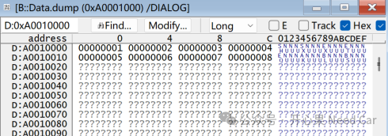
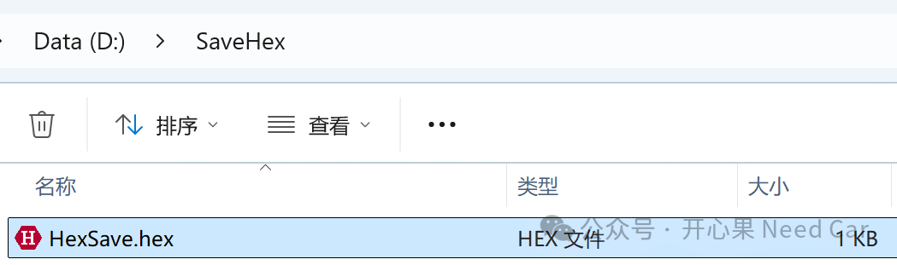
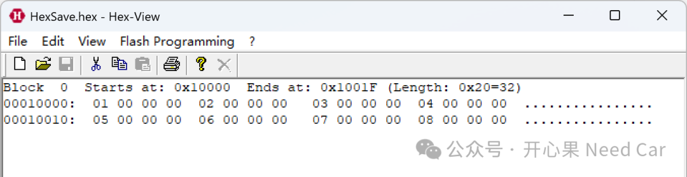
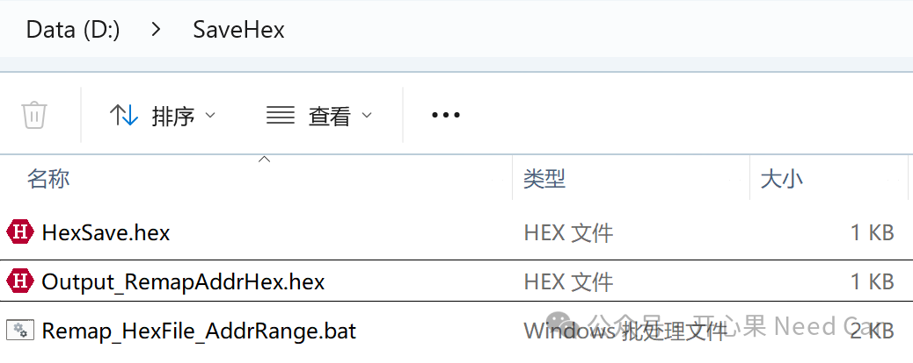
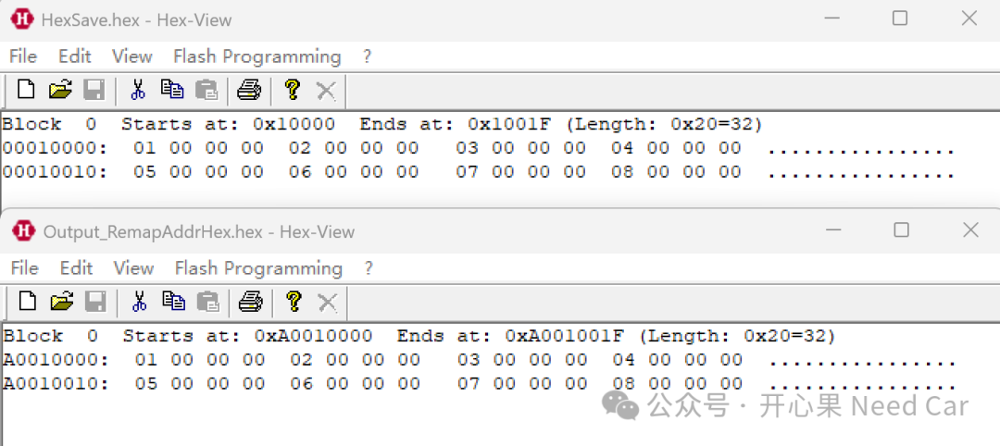
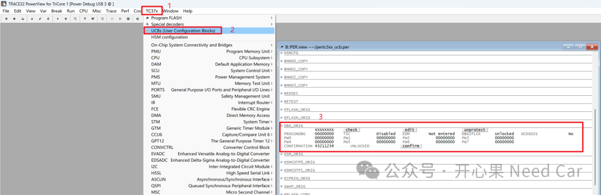
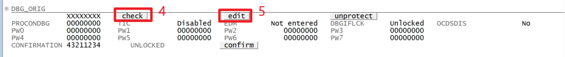
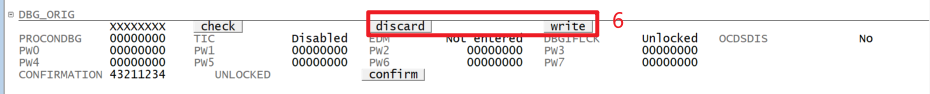
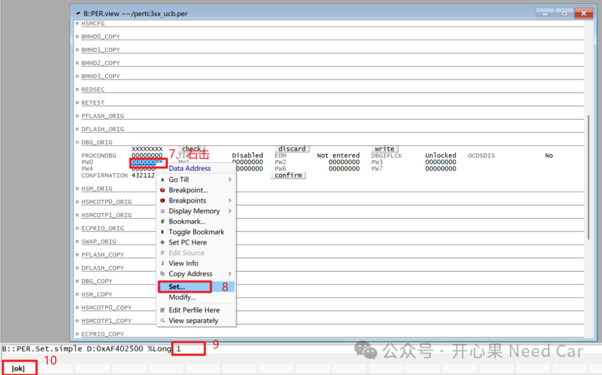
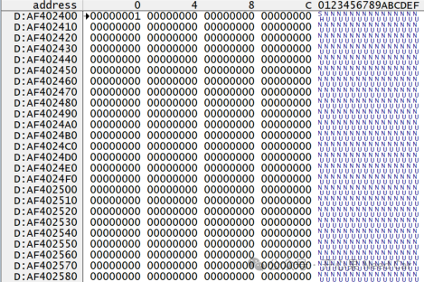

开心果 Need Car · 2025-04-14T06:36:00+08:00 · 微信原文
1、如何基于Lauterbach输出*.hex

Data.SAVE.IntelHex D:/SaveHex/HexSave.hex 0xA0010000--0xA001001F

/remap:BankStartAddress-BankEndAddress,LinearBaseAddress,BankSize,BankIncrementBankStartAddress：操作对象的起始地址，本文操作对象的起始地址为0x10000；
BankEndAddress：操作对象的结束地址，本文操作对象的结束地址为0x1001F；
LinearBaseAddress：表示目标地址范围的起始地址，本文要重定向到0xA0010000；
BankSize：保存的长度，本文32 bytes；
BankIncrement：BankIncrement是两个bank之间的地址偏差，暂默认0x10000。
@echo offREM -----------------------------------------------REM Configuration parameters (modify as needed)REM -----------------------------------------------set HEXVIEW_PATH="D:\APP\HexViewer\hexview\HexView.exe"set INPUT_HEX="D:\SaveHex\HexSave.hex"set OUTPUT_HEX="D:\SaveHex\Output_RemapAddrHex.hex"set FILL_BYTE=0xFFREM -----------------------------------------------REM Step 1: Verify input file existenceREM -----------------------------------------------if not exist %INPUT_HEX% (echo Error：The input file %INPUT_HEX% does not exist!exit /b 1)REM -----------------------------------------------REM Step 2: Execute HexView commandsREM -----------------------------------------------%HEXVIEW_PATH% %INPUT_HEX% /S /remap:0x00010000-0x0001001F,0xA0010000,0x20,0x10000 /XI:32 -o %OUTPUT_HEX%REM -----------------------------------------------REM Step 3: Verify output file creationREM -----------------------------------------------if exist %OUTPUT_HEX% (echo Success: Padded file saved to %OUTPUT_HEX%) else (echo Error: Padding failed! Check HexView parameters/logs.exit /b 1)


2、如何基于Lauterbach进行UCB写操作





往期精彩回顾